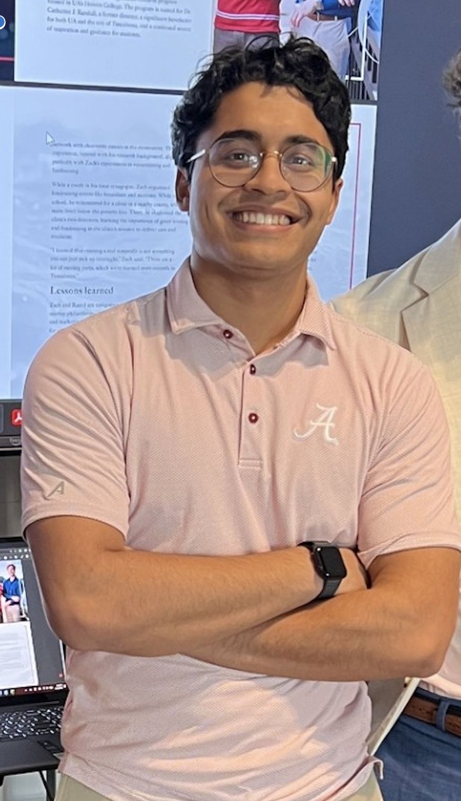

About Me
I believe in empathy-driven research questions.

I completed my B.S. in Mathematics and Economics at the University of Alabama in 2026. I am currently pursuing my graduate training at UA while on the pre-med track. I am interested in improving health and social welfare. My longest-standing work uses data and econometric tools to study novel behavioral mechanisms that contribute to (1) unhealthy eating, smoking, and drinking, (2) reductions in charitable giving, and (3) more progressive policy attitudes. Much of my recent work adds rigorous science to much of the art of experimental economics and policy design. I work on an analog to precision medicine - precision policy - to push designers to think outside the box about randomized control trials to change individual-level outcomes for the better. I borrow ideas from colleagues in cancer research to do so. In the field of medicine, I work with clinician-informaticists to design global solutions to the doctor shortage by testing and implementing cognitive AI in resource-poor settings. My dream would be to bring healthcare to anyone, anywhere.
After completing my undergraduate degrees, I'll complete an M.A. in Mathematics (2027) and a PhD in Quantitative Economics (2028) at the University of Alabama. I plan to go on to medical school afterwards.